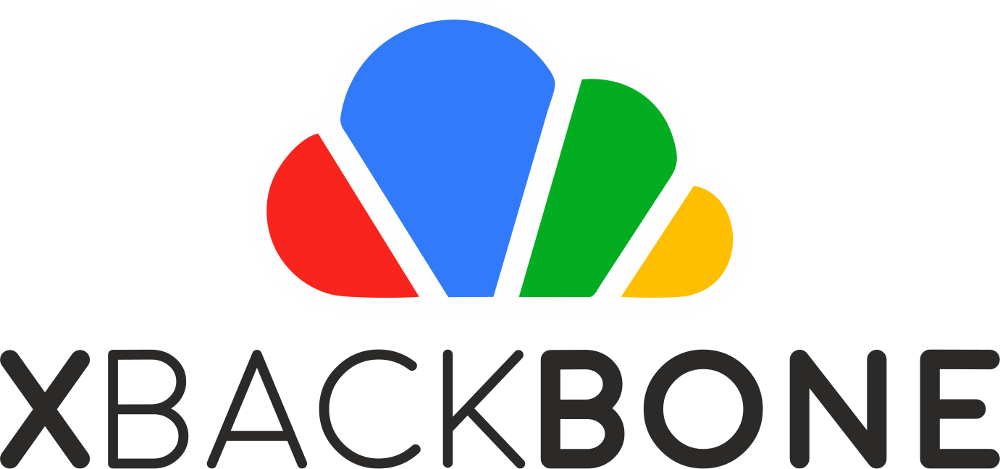

XBackBone is a simple and lightweight PHP file manager that support the instant sharing tool ShareX and *NIX systems. It supports uploading and displaying images, GIF, video, code, formatted text, pdf, and file downloading and uploading. Also have a web UI with multi user management, media gallery and search support.
Main Features
- Multiple clients supported: ShareX, Screencloud, uPic, …
- Config generator for ShareX, Screencloud.
- Low memory footprint.
- Multiple backends support: Local storage, AWS S3, Google Cloud, Azure Blob Storage, Dropbox, FTP(s).
- Web file upload.
- Code uploads syntax highlighting.
- Video and audio uploads webplayer.
- PDF viewer.
- Files preview page.
- Bootswatch themes support.
- Responsive theme for mobile use.
- Multi language support.
- User management, multi user features, roles and disk quota.
- Public and private uploads.
- Logging system.
- Share to Telegram.
- Linux supported via a per-user custom generated script (server and desktop).
- Direct downloads using curl or wget commands.
- Direct images links support on Discord, Telegram, Facebook, etc.
- System updates without FTP or CLI.
- Easy web installer.
- LDAP authentication.
- Registration system.
- Automatic uploads tagging system.
- Tag uploads with custom tags for categorization.
- … and more.
Demo GIF

Translations
You can help translating the project on Weblate.